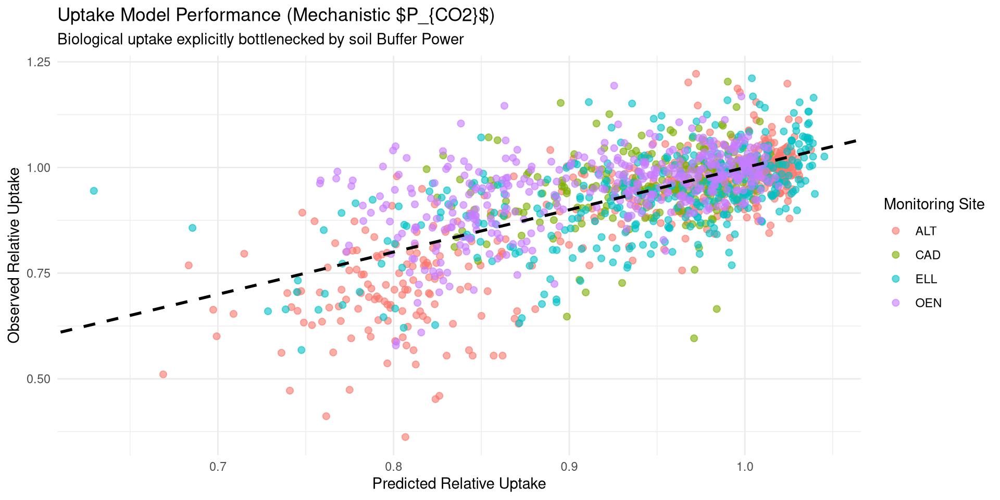
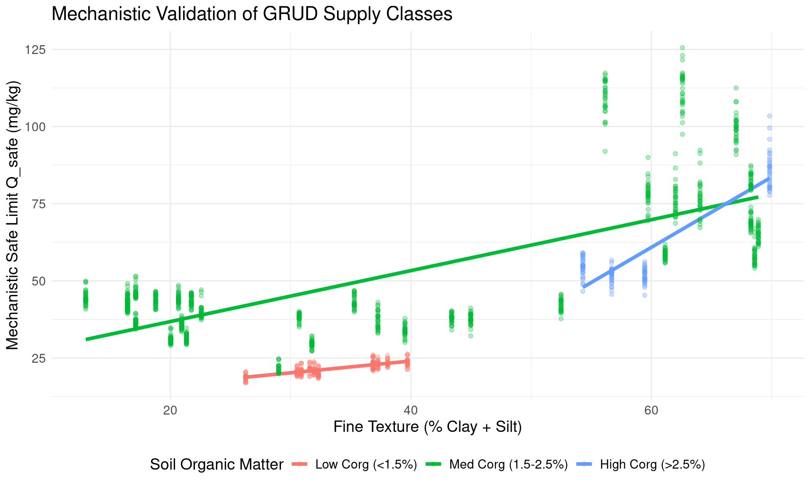

graph LR
%% Start
SQ[Agnostic Approach <br> Affine Recommendation <br> F = C * Q_yield]
%% Step 1: Soil Assessment
subgraph 1. Soil State Assessment
G_PTF[Agnostic: <br> Stoichiometric Concentration <br> P_CO2 / P_AAE10]
M_PTF[Mechanistic: <br> Thermodynamic Activity <br> a_CO2]
end
%% Step 2: Biological Interface
subgraph 2. Biological Interface
G_UP[Agnostic: <br> Direct Uptake Correlation <br> P_uptake ~ STP]
M_UP[Mechanistic: <br> Yield Model & P_crit <br> Buffer Power b & 1/b]
end
%% Step 3: Final Output
subgraph 3. Fertilizer Recommendation
G_REC[Agnostic: <br> Multiplicative Correction <br> F = C * Q_yield]
M_REC[Mechanistic: <br> Additive Correction <br> F = Q_yield + dQ_soil]
end
SQ --> G_PTF
SQ --> M_PTF
G_PTF --> G_UP
M_PTF --> M_UP
G_UP --> G_REC
M_UP --> M_REC
classDef agnostic fill:#ffffff,stroke:#1f77b4,stroke-width:2px,color:#000000,rx:5px,ry:5px;
classDef mech fill:#ffffff,stroke:#2ca02c,stroke-width:2px,color:#000000,rx:5px,ry:5px;
classDef start fill:#ffffff,stroke:#7f7f7f,stroke-width:2px,color:#000000,rx:10px,ry:10px;
class SQ start;
class G_PTF,G_UP,G_REC agnostic;
class M_PTF,M_UP,M_REC mech;
click SQ "#/the-swamp-of-the-dead-grud-p_co2-model" "Jump to Agnostic Model"
click G_PTF "#" "Dummy"
click M_PTF "#" "Dummy"
click G_UP "#" "Dummy"
click M_UP "#" "Dummy"
click G_REC "#" "Dummy"
click M_REC "#" "Dummy"
P-release kinetics as a predictor for P-availability
in Swiss cropping systems
Agroscope Research Team
2026-07-21
Graphical Abstract: Methodological Pathway
The Current Paradigm & The Missing Link
Detailed Context
Recent extensive evaluations of long-term European field trials by Steinfurth et al. (2024) have highlighted a critical gap in modern P management: predicting P depletion and availability is impossible without knowing the “P sorption capacity” of the soil.
Simultaneously, pioneering work at Agroscope by Hirte et al. (2021) has proven that critical soil test phosphorus (STP) concentrations are not static. By evaluating 26 years of Swiss field data, they demonstrated that pedoclimatic variables (clay, pH, temperature) significantly shift yield response curves, exposing the limitations of rigid empirical guidelines.
Our Goal: We aim to bridge these two findings. We build upon the pedoclimatic dependencies identified by Hirte et al. (2021) by providing the explicit mechanistic “missing link” called for by Steinfurth et al. (2024). We directly model the soil’s P sorption capacity (\(K_f\)) via the Freundlich isotherm, and the resulting non-linear Buffer Power (\(b\)), to calculate exactly how pedoclimates restrict P diffusion and crop uptake.
The Piper-Steenbjerg Paradox & Sorption Capacity
The Paradox Explained
For decades, agronomic models have attempted to use simple plant tissue concentrations (\(C_P\)) to predict phosphorus limitation. However, these empirical models routinely fail in the field due to the Piper-Steenbjerg effect (carbon dilution).
When a severely P-starved plant finally receives Phosphorus, it rapidly generates new biomass (carbon). This burst of growth paradoxically dilutes the tissue \(C_P\) concentration, causing the measured concentration to drop even though the total Phosphorus mass in the plant increased.
Because of this dilution effect, empirical concentration measurements are fundamentally blind. As demonstrated by Hirte et al. (2021), interpreting plant availability is impossible without knowing the underlying sorption capacity of the soil.
To solve this, we must abandon simple empirical concentrations and physically model the absolute mass-flux: Uptake (\(Yield \times C_P\)).
Conceptual Foundation: The Physical Chemistry
Before analyzing the data, we must define the fundamental physical variables that govern soil phosphorus availability:
- Intensity (\(I\)): The concentration of dissolved, immediately plant-available Phosphorus in the soil solution. In this presentation, we use \(P_{CO2}\) (\(\text{mg P / L}\)) as our national proxy to capture this property.
- Quantity (\(Q\)): The total reserve mass of solid-phase Phosphorus that can potentially dissolve into the soil solution. We use the aggressive extractant \(P_{AAE10}\) (\(\text{mg P / kg soil}\)) as our national proxy to assess this reserve.
- Buffer Power (\(b\)): The physical resistance of the soil to changes in Intensity.
The Q(I) Model & Non-Linear Buffer Power
The fundamental relationship between the solid pool and the dissolved pool is described by the Quantity-Intensity \(Q(I)\) curve.
Thermodynamic Derivation
Buffer power is defined as the partial derivative of this curve at constant temperature \(T\): \[ b = \left( \frac{\partial Q}{\partial I} \right)_T \]
We model this physical chemistry using the Freundlich Isotherm, which accurately captures non-linear desorption kinetics: \[ Q(I) = K \cdot I^n \]
By taking the derivative of the Freundlich equation, we obtain the buffer power: \[ b(I) = K \cdot n \cdot I^{n-1} \]
The Big Change: Because the relationship is non-linear (\(n \neq 1\)), the buffer power is no longer a static constant. It becomes a dynamic function of the current Intensity state! The soil’s ability to resist leaching drops exponentially as it becomes more saturated.
Interactive Q(I) Dynamics
Observe how the instantaneous buffer power (\(b = dQ/dI\)) collapses at high ionic concentrations. In the next slide, you can explore this interactively across the three physical soil archetypes.
Physical Buffer Collapse
quantiles = FileAttachment("site_quantiles.json").json()
archetypes = quantiles.filter(d => ["CAD", "ELL", "OEN"].includes(d.site))
ribbon_data = archetypes.flatMap(d => {
return d3.range(0.1, 10.2, 0.1).map(i => ({
site: d.site === "CAD" ? "Sand (CAD)" : d.site === "ELL" ? "Loam (ELL)" : "Clay (OEN)",
I: i,
Q25: d.K_25 * Math.pow(i, d.n_25),
Q50: d.K_50 * Math.pow(i, d.n_50),
Q75: d.K_75 * Math.pow(i, d.n_75)
}));
})
color_map = new Map([
["Sand (CAD)", "#E69F00"],
["Loam (ELL)", "#56B4E9"],
["Clay (OEN)", "#009E73"]
])Q = (I) => K * Math.pow(I, n)
dQ_dI = (I) => n * K * Math.pow(I, n - 1)
// Generate curve points
curve_data = d3.range(0.1, 10.1, 0.1).map(i => ({ I: i, Q: Q(i) }))
// Current point
point_data = [{ I: current_I, Q: Q(current_I) }]
// Tangent line points
tangent_m = dQ_dI(current_I)
tangent_data = [
{ I: Math.max(0, current_I - 2), Q: Q(current_I) - tangent_m * Math.min(current_I, 2) },
{ I: current_I + 2, Q: Q(current_I) + tangent_m * 2 }
]
Plot.plot({
x: { label: "Equilibrium Concentration I (mg/L)", domain: [0, 10] },
y: { label: "Desorbed Phosphorus Q (mg P / kg soil)", domain: [0, 150] },
height: 550,
width: 1200,
color: { domain: Array.from(color_map.keys()), range: Array.from(color_map.values()), legend: true },
marks: [
// Physical Soil Ribbons
Plot.areaY(ribbon_data, {x: "I", y1: "Q25", y2: "Q75", fill: "site", fillOpacity: 0.3}),
Plot.lineY(ribbon_data, {x: "I", y: "Q50", stroke: "site", strokeWidth: 2, strokeDasharray: "4"}),
// Interactive Curve
Plot.line(curve_data, {x: "I", y: "Q", stroke: "#000000", strokeWidth: 4}),
Plot.line(tangent_data, {x: "I", y: "Q", stroke: "#E3000F", strokeWidth: 2, strokeDasharray: "4"}),
Plot.dot(point_data, {x: "I", y: "Q", fill: "#E3000F", r: 8}),
Plot.text(point_data, {
x: "I", y: "Q",
text: d => `b = ${tangent_m.toFixed(2)}`,
dy: -20,
dx: 20,
fill: "#E3000F",
fontWeight: "bold",
fontSize: 18
}),
Plot.gridY({stroke: "#eee"})
]
})The Thermodynamic Pedotransfer Function (Practical Compromise)
To map static soil tests into a dynamic Q(I) buffer curve without requiring expensive kinetic laboratory analysis, we built a mixed-effects Pedotransfer Function (PTF). We model the bound legacy pool (\(P_{AAE10}\), proxy for \(Q\)) against the active intensity (\(P_{CO2}\), proxy for \(I\)).
The Practical Compromise: While our rigorous geochemical analysis proved that amorphous metal oxides (Feox/Alox) dictate physical binding capacity, standard Agroscope field trials rarely measure them. To maximize field utility, we built a generalized agronomic PTF that substitutes these strict thermodynamic drivers with standard background proxies (Ca, Mg, K, Fine Texture).
Because the non-linear Freundlich isotherm \(Q = K \cdot I^n\) becomes linear in log-log space (\(\ln Q = \ln K + n \ln I\)), we structure the fixed environmental effects to explicitly solve for the physical parameters:
\[ \ln(P_{AAE10}) = \underbrace{\left(\alpha + \sum \beta_{env} X_{env}\right)}_{\text{Mathematically solves for } \ln(K)} + \underbrace{\left(\beta_I + \sum \gamma_{env} X_{env}\right)}_{\text{Mathematically solves for } n} \cdot \ln(P_{CO2}) \]
1. The Buffer Multiplier (\(\ln K\)): The model intercept represents the baseline sorption capacity, driven by 8 standard soil covariates \(X_{env}\) (pH, Fine Texture, Ca, Mg, K, \(C_{org}\), Temperature, Precipitation). 2. The Buffer Curvature (\(n\)): The interaction slope represents how the physical buffer power decays as the soil becomes saturated.
(Mixed-Effects Structure: \(\alpha \sim 1 | \text{site/plot\_nr}\), absorbing structural field-level variances to isolate the pure pedoclimatic chemistry).
The PTF Parameter Space
Here we unwrap the “black box” of the Pedotransfer Function. Hold the remaining 7 soil covariates constant using the sliders below, and watch how the predicted Pedological \(K\) (Multiplier) and \(n\) (Curvature) mathematically react across the two main pedological drivers: pH and Texture (Clay + Silt).
viewof raw_Ca = Inputs.range([3.1, 5.7], {value: 4.88, step: 0.1, label: "Log Ca"})
viewof raw_Mg = Inputs.range([0.8, 3.4], {value: 2.32, step: 0.1, label: "Log Mg"})
viewof raw_K = Inputs.range([1.1, 4.4], {value: 2.54, step: 0.1, label: "Log K"})
viewof raw_Corg = Inputs.range([-0.5, 1.7], {value: 0.64, step: 0.1, label: "Log Corg"})viewof raw_Temp_Anom = Inputs.range([-2.5, 2.5], {value: -0.01, step: 0.1, label: "Temp Anom"})
viewof raw_Prec_Anom = Inputs.range([-177, 156], {value: -0.78, step: 1, label: "Prec Anom"})
viewof raw_Temp_Mean = Inputs.range([1.1, 10.1], {value: 2.46, step: 0.1, label: "Temp Mean"})
viewof plot_target = Inputs.radio(["K (Multiplier)", "n (Curvature)"], {value: "K (Multiplier)", label: "Parameter"})ptf = FileAttachment("ptf_coefs.json").json()
scales_dict = ptf.scales
coefs = ptf.coefficients
z_Ca = (raw_Ca - scales_dict.Ca.mean) / scales_dict.Ca.sd
z_Mg = (raw_Mg - scales_dict.Mg.mean) / scales_dict.Mg.sd
z_K_cov = (raw_K - scales_dict.K.mean) / scales_dict.K.sd
z_Corg = (raw_Corg - scales_dict.Corg.mean) / scales_dict.Corg.sd
z_Temp_Anom = (raw_Temp_Anom - scales_dict.Temp_Anom.mean) / scales_dict.Temp_Anom.sd
z_Prec_Anom = (raw_Prec_Anom - scales_dict.Prec_Anom.mean) / scales_dict.Prec_Anom.sd
z_Temp_Mean = (raw_Temp_Mean - scales_dict.Temp_Mean.mean) / scales_dict.Temp_Mean.sd
heatmap_data = {
let data = [];
for (let ph = 5.0; ph <= 8.5; ph += 0.1) {
for (let tex = 3.3; tex <= 4.5; tex += 0.05) {
let z_pH = (ph - scales_dict.pH.mean) / scales_dict.pH.sd;
let z_tex = (tex - scales_dict.FineTexture.mean) / scales_dict.FineTexture.sd;
let ln_K = coefs["(Intercept)"] +
coefs["z_ln_FineTexture"] * z_tex +
coefs["z_pH"] * z_pH +
coefs["z_ln_Ca"] * z_Ca +
coefs["z_ln_Mg"] * z_Mg +
coefs["z_ln_K"] * z_K_cov +
coefs["z_ln_Corg"] * z_Corg +
coefs["z_Temp_Anom"] * z_Temp_Anom +
coefs["z_Prec_Anom"] * z_Prec_Anom +
coefs["z_Temp_Mean"] * z_Temp_Mean;
let n = coefs["ln_P_CO2"] +
coefs["ln_P_CO2:z_ln_FineTexture"] * z_tex +
coefs["ln_P_CO2:z_pH"] * z_pH +
coefs["ln_P_CO2:z_ln_Ca"] * z_Ca +
coefs["ln_P_CO2:z_ln_Mg"] * z_Mg +
coefs["ln_P_CO2:z_ln_K"] * z_K_cov +
coefs["ln_P_CO2:z_ln_Corg"] * z_Corg +
coefs["ln_P_CO2:z_Temp_Anom"] * z_Temp_Anom +
coefs["ln_P_CO2:z_Prec_Anom"] * z_Prec_Anom;
data.push({ pH: ph, Texture: tex, K: Math.exp(ln_K), n: n });
}
}
return data;
}Plot.plot({
width: width,
height: 600,
marginLeft: 60,
x: { label: "Soil pH" },
y: { label: "Log(Clay + Silt) Texture" },
color: {
type: "linear",
scheme: plot_target === "K (Multiplier)" ? "YlOrRd" : "Blues",
domain: plot_target === "K (Multiplier)" ? [10, 80] : [0.1, 0.9],
legend: true,
label: plot_target
},
marks: [
Plot.cell(heatmap_data, {
x: "pH",
y: "Texture",
fill: plot_target === "K (Multiplier)" ? "K" : "n",
inset: 0.5
})
]
})Theoretical Background: Barber-Cushman & Diffusion
At the biological root interface, Phosphorus uptake is fundamentally driven by Michaelis-Menten kinetics. However, before a root can absorb a nutrient, the nutrient must first travel through the soil matrix to reach the root surface.
Because Phosphorus binds strongly to soil particles, its transport is almost entirely dominated by diffusion rather than mass flow. The classic Barber-Cushman model defines the Effective Diffusion Coefficient (\(D_e\)) as:
\[ D_e = D_l \, \theta \, f \, \frac{1}{b} \]
Where: - \(D_l\): Diffusion coefficient in pure liquid - \(\theta\): Volumetric water content - \(f\): Impedance factor (tortuosity of the soil pores) - \(b\): Thermodynamic Buffer Power
The Physical Bottleneck: Effective diffusion is inversely proportional to buffer power (\(D_e \propto 1/b\)). A soil with a massive buffer capacity chemically traps the Phosphorus, dragging the diffusion rate to a halt and causing starvation at the root surface!
The Mechanistic Uptake Model
The full numerical Barber-Cushman model requires complex spatio-temporal integration, making it highly impractical for national fertilizer guidelines. Instead, we embed the core theoretical limit (the diffusion penalty \(1/b\)) directly into a macroscopic Michaelis-Menten Uptake Model:
\[ U_{rel} = \frac{U_{max} \cdot I}{K_{m} + I} \]
We explicitly structure the fixed and random effects to penalize nutrient delivery based on the physical chemistry of diffusion:
1. Environmental Modulation of Max Uptake (\(U_{max}\)): \[ U_{max} = U_{base} + \beta_{temp} \Delta T + \beta_{N} N \]
2. Physical Diffusion Penalty on the Half-Saturation Constant (\(K_m\)): \[ K_m = K_{base} \cdot \exp\left( \beta_{inv\_b} \cdot \left(\frac{1}{b}\right) + \beta_{v0} v_0 \right) \]
(Mixed-Effects Structure: \(U_{base} \sim 1 | \text{site/year}\), modeling random baseline productivity variances per trial).

The \(P_{crit}\) Target & Agronomic Goals
Using the Michaelis-Menten Uptake Model, we can mathematically define the critical soil intensity (\(P_{crit}\)) required to reach 95% of the maximum biological uptake.
Because the NLME model intrinsically defines the 100% theoretical limit (\(U_{max}\)), we simply solve for the Intensity \(I\) that satisfies \(U = 0.95 U_{max}\):
\[ 0.95 \cdot U_{max} = \frac{U_{max} \cdot I}{K_m + I} \]
\[ 0.95 K_m + 0.95 I = I \] \[ 0.95 K_m = 0.05 I \] \[ I = 19 \cdot K_m \]
Conclusion: The Critical Intensity (\(P_{crit}\)) is exactly 19 times the Half-Saturation Constant (\(K_m\)).
Because \(K_m\) is dynamically penalized by the physical buffer power (\(1/b\)) and desorption velocity (\(v_0\)), \(P_{crit}\) natively adapts to the unique pedological bottlenecks of the soil!
The Parametric Recommendation Framework
With the physical bottlenecks isolated, we can transition from rigid empirical matrices to a purely thermodynamic mass-balance approach for fertilizer recommendations.
Step 1: Calculate the Crop’s Target State (\(P_{crit}\)) Calculate the required Intensity using the biological Uptake model (\(P_{crit} = 19 K_m\)).
Step 2: Calculate the Soil’s Capacity Limit (\(Q(I)\)) Use the Thermodynamic Pedotransfer Function (PTF) to calculate the non-linear buffer curve (\(K\) and \(n\)) based on the soil’s pH, Texture, and background cations.
Step 3: Additive Mass Adjustment Calculate the exact mass difference required to shift the soil from its current state (\(I_{now}\)) to the critical state (\(P_{crit}\)): \[ \Delta Q_{yield} = Q(P_{crit}) - Q(I_{now}) \]
Final Recommendation: Add this missing thermodynamic mass directly to the crop’s baseline physiological requirement (\(F_{norm}\)): \[ P_{rec} = F_{norm} + \Delta Q_{yield} - ext{Residues} \]
Interactive Fertilization Calculator
Explore the Parametric Framework in real-time. Select a crop and adjust the soil parameters. The model instantly calculates the non-linear buffer curve, the \(P_{crit}\) target, and the precise additive fertilizer recommendation.
viewof crop_choice = Inputs.select(new Map([
["Winterweizen (Brot)", "WW"],
["Körnermais", "KM"],
["Kartoffeln (Speise)", "KA"],
["Zuckerrüben", "ZR"],
["Winterraps", "RA"]
]), {value: "WW", label: "Crop Type"})
viewof current_P = Inputs.range([0.1, 5.0], {value: 1.5, step: 0.1, label: "Current Soil Test P (mg/L)"})
viewof soil_pH = Inputs.range([5.0, 8.5], {value: 6.5, step: 0.1, label: "Soil pH"})
viewof soil_clay_silt = Inputs.range([10, 80], {value: 35, step: 1, label: "Texture (Clay+Silt %)"})
viewof show_expert = Inputs.toggle({label: "Show Expert Soil Panel (Cations & Corg)", value: false})
viewof target_uptake_pct = Inputs.range([0, 100], {value: 95, step: 1, label: "Target P-Uptake (%)"})
viewof show_uptake = Inputs.toggle({label: "Show Uptake Target", value: true})
viewof target_yield_pct = Inputs.range([0, 100], {value: 95, step: 1, label: "Target Relative Yield (%)"})
viewof show_yield = Inputs.toggle({label: "Show Yield Target", value: true})
viewof dynamic_limits = Inputs.toggle({label: "Use Dynamic Plot Limits", value: false})viewof exp_Ca = Inputs.range([500, 20000], {value: 5000, step: 100, label: "Ca (mg/kg)"})
viewof exp_Mg = Inputs.range([50, 1000], {value: 250, step: 10, label: "Mg (mg/kg)"})
viewof exp_K = Inputs.range([20, 500], {value: 115, step: 5, label: "K (mg/kg)"})
viewof exp_Corg = Inputs.range([0.5, 5], {value: 2.0, step: 0.1, label: "Corg (%)"})grud_co2_matrix = [
[1.5, 1.5, 1.5, 1.4, 1.2],
[1.4, 1.4, 1.3, 1.2, 1.1],
[1.2, 1.2, 1.1, 1.0, 1.0],
[1.0, 1.0, 1.0, 1.0, 0.8],
[1.0, 1.0, 1.0, 0.8, 0.6],
[1.0, 1.0, 0.8, 0.6, 0.0],
[1.0, 0.8, 0.6, 0.0, 0.0],
[0.8, 0.8, 0.4, 0.0, 0.0],
[0.8, 0.6, 0.0, 0.0, 0.0],
[0.6, 0.4, 0.0, 0.0, 0.0],
[0.6, 0.4, 0.0, 0.0, 0.0],
[0.4, 0.0, 0.0, 0.0, 0.0],
[0.4, 0.0, 0.0, 0.0, 0.0],
[0.4, 0.0, 0.0, 0.0, 0.0],
[0.0, 0.0, 0.0, 0.0, 0.0],
[0.0, 0.0, 0.0, 0.0, 0.0]
];grud_aae_matrix = [
[1.5, 1.5, 1.5, 1.4, 1.4],
[1.5, 1.5, 1.4, 1.4, 1.2],
[1.5, 1.4, 1.4, 1.2, 1.2],
[1.4, 1.4, 1.2, 1.2, 1.0],
[1.4, 1.2, 1.2, 1.0, 1.0],
[1.2, 1.2, 1.2, 1.0, 1.0],
[1.2, 1.0, 1.0, 1.0, 1.0],
[1.2, 1.0, 1.0, 1.0, 1.0],
[1.0, 1.0, 1.0, 1.0, 1.0],
[1.0, 1.0, 1.0, 1.0, 1.0],
[1.0, 1.0, 1.0, 0.8, 0.8],
[1.0, 1.0, 0.8, 0.8, 0.6],
[1.0, 1.0, 0.8, 0.8, 0.6],
[1.0, 0.8, 0.8, 0.6, 0.6],
[0.8, 0.8, 0.8, 0.6, 0.6],
[0.8, 0.8, 0.6, 0.6, 0.4],
[0.8, 0.6, 0.6, 0.4, 0.4],
[0.6, 0.6, 0.6, 0.4, 0.4],
[0.6, 0.6, 0.4, 0.4, 0.0],
[0.6, 0.4, 0.4, 0.0, 0.0],
[0.4, 0.4, 0.4, 0.0, 0.0],
[0.4, 0.4, 0.0, 0.0, 0.0],
[0.4, 0.0, 0.0, 0.0, 0.0],
[0.0, 0.0, 0.0, 0.0, 0.0],
[0.0, 0.0, 0.0, 0.0, 0.0],
[0.0, 0.0, 0.0, 0.0, 0.0]
];get_grud_correction = (type, p_val, clay) => {
let clay_idx = Math.min(4, Math.max(0, Math.floor(clay / 10)));
let row_idx = 0;
if (type === 'CO2') {
let thresholds = [0.15, 0.46, 0.77, 1.08, 1.39, 1.70, 2.01, 2.32, 2.63, 2.94, 3.25, 3.56, 3.88, 4.19, 4.50];
row_idx = thresholds.findIndex(t => p_val <= t);
if (row_idx === -1) row_idx = 15;
return grud_co2_matrix[row_idx][clay_idx];
} else {
let thresholds = [4.9, 9.9, 14.9, 19.9, 24.9, 29.9, 34.9, 39.9, 44.9, 49.9, 54.9, 59.9, 64.9, 69.9, 74.9, 79.9, 84.9, 89.9, 94.9, 99.9, 104.9, 109.9, 114.9, 119.9, 124.9];
row_idx = thresholds.findIndex(t => p_val <= t);
if (row_idx === -1) row_idx = 25;
return grud_aae_matrix[row_idx][clay_idx];
}
}// Calculate predictions
calc = {
let sd = ptf.scales;
let c = ptf.coefficients;
let z_pH = (soil_pH - sd.pH.mean) / sd.pH.sd;
let z_tex = (Math.log(soil_clay_silt) - sd.FineTexture.mean) / sd.FineTexture.sd;
let val_Ca = show_expert ? exp_Ca : 5000;
let val_Mg = show_expert ? exp_Mg : 250;
let val_K = show_expert ? exp_K : 115;
let val_Corg = show_expert ? exp_Corg : 2.0;
let z_Ca = (Math.log(val_Ca) - sd.Ca.mean) / sd.Ca.sd;
let z_Mg = (Math.log(val_Mg) - sd.Mg.mean) / sd.Mg.sd;
let z_K = (Math.log(val_K) - sd.K.mean) / sd.K.sd;
let z_Corg = (Math.log(val_Corg) - sd.Corg.mean) / sd.Corg.sd;
// Predict K and n
let ln_K = c["(Intercept)"] + c["z_ln_FineTexture"]*z_tex + c["z_pH"]*z_pH +
c["z_ln_Ca"]*z_Ca + c["z_ln_Mg"]*z_Mg + c["z_ln_K"]*z_K + c["z_ln_Corg"]*z_Corg;
let n = c["ln_P_CO2"] + c["ln_P_CO2:z_ln_FineTexture"]*z_tex + c["ln_P_CO2:z_pH"]*z_pH +
c["ln_P_CO2:z_ln_Ca"]*z_Ca + c["ln_P_CO2:z_ln_Mg"]*z_Mg + c["ln_P_CO2:z_ln_K"]*z_K +
c["ln_P_CO2:z_ln_Corg"]*z_Corg;
let K_val = Math.exp(ln_K);
let b_1 = n * K_val * Math.pow(1.0, n - 1);
let inv_b = 1.0 / b_1;
let z_inv_b = (inv_b - 0.05) / 0.02; // Approx scaling of inverse buffer for the demo
let up = coef_data.uptake_coefs;
// Look up crop-specific K_base
let K_base_crop = up.K_base_crops[crop_choice] || up.K_base_crops["WW"]; // fallback
let Km = K_base_crop * Math.exp(up.beta_invb * z_inv_b);
// Uptake target logic: y = x / (Km + x) => x = y * Km / (1 - y)
let frac_up = target_uptake_pct / 100.0;
let P_crit_up = (frac_up >= 1.0) ? 999 : (frac_up * Km) / (1.0 - frac_up);
let Q_target_up = K_val * Math.pow(P_crit_up, n);
let Q_now = K_val * Math.pow(current_P, n);
let delta_Q_up = Q_target_up - Q_now;
let P_rec_up = norms.P + delta_Q_up;
let yd = coef_data.yield_coefs;
let yd_sd = coef_data.yield_scales;
let z_pH_yd = (soil_pH - yd_sd.pH.mean) / yd_sd.pH.sd;
let z_K_yd = (Math.log(val_K) - yd_sd.K.mean) / yd_sd.K.sd;
let z_Mg_yd = (Math.log(val_Mg) - yd_sd.Mg.mean) / yd_sd.Mg.sd;
let c_base_crop = yd.c_base_crops[crop_choice] || yd.c_base_crops["WW"];
let c_eff = c_base_crop * Math.exp(yd.beta_invb * z_inv_b + yd.beta_pH * z_pH_yd + yd.beta_K * z_K_yd + yd.beta_Mg * z_Mg_yd);
// Yield target logic: y = 1 - exp(-c_eff * (I + E_base)) => I = -ln(1 - y) / c_eff - E_base
let frac_yd = target_yield_pct / 100.0;
let P_crit_yd = (frac_yd >= 1.0) ? 999 : (-Math.log(1.0 - frac_yd) / c_eff) - yd.E_base;
// Allow negative P_crit_yd to show the theoretical eutrophication buffer
// Calculate Q_target_yd using an antisymmetric extension to avoid NaN from fractional roots of negative numbers
let Q_target_yd = Math.sign(P_crit_yd) * K_val * Math.pow(Math.abs(P_crit_yd), n);
let delta_Q_yd = Q_target_yd - Q_now;
let P_rec_yd = norms.P + delta_Q_yd;
let grud_c_co2 = get_grud_correction('CO2', current_P, soil_clay_silt);
let grud_rec_co2 = norms.P * grud_c_co2;
// The mechanistic model outputs Q_now in mg P / kg soil.
// The empirical GRUD AAE10 tables expect inputs in mg P / kg soil directly!
let grud_c_aae = get_grud_correction('AAE', Q_now, soil_clay_silt);
let grud_rec_aae = norms.P * grud_c_aae;
return { K: K_val, n: n, Q_now: Q_now, F_norm: norms.P,
P_crit_up: P_crit_up, Q_target_up: Q_target_up, delta_Q_up: delta_Q_up, P_rec_up: P_rec_up,
P_crit_yd: P_crit_yd, Q_target_yd: Q_target_yd, delta_Q_yd: delta_Q_yd, P_rec_yd: P_rec_yd,
grud_c_co2, grud_rec_co2, grud_c_aae, grud_rec_aae };
}md`#### Fertilizer Recommendation
<div style="font-size: 0.85em; color: #555;">
<div style="display: flex; justify-content: space-between; flex-wrap: wrap;">
<div style="flex: 1; min-width: 250px;">
<strong>Mechanistic Predictions:</strong><br/>
${show_uptake ? `Uptake: F(${calc.F_norm}) + ΔQ(${calc.delta_Q_up.toFixed(1)}) = <strong>${Math.max(0, calc.P_rec_up).toFixed(1)} kg/ha</strong><br/>` : ""}
${show_yield ? `Yield: F(${calc.F_norm}) + ΔQ(${calc.delta_Q_yd.toFixed(1)}) = <strong>${Math.max(0, calc.P_rec_yd).toFixed(1)} kg/ha</strong>` : ""}
</div>
<div style="flex: 1; min-width: 250px;">
<strong>GRUD Empirical Recommendations:</strong><br/>
Based on CO<sub>2</sub>: F(${calc.F_norm}) × ${calc.grud_c_co2.toFixed(2)} = <strong>${calc.grud_rec_co2.toFixed(1)} kg/ha</strong><br/>
Based on AAE10: F(${calc.F_norm}) × ${calc.grud_c_aae.toFixed(2)} = <strong>${calc.grud_rec_aae.toFixed(1)} kg/ha</strong>
</div>
</div>
</div>`{
let min_I = Math.min(0, (show_yield ? calc.P_crit_yd : 0) * 1.1, (show_uptake ? calc.P_crit_up : 0) * 1.1);
let min_Q = Math.min(0, (show_yield ? calc.Q_target_yd : 0) * 1.1, (show_uptake ? calc.Q_target_up : 0) * 1.1);
let max_I_up = (show_uptake && calc.P_crit_up < 999) ? calc.P_crit_up : 5;
let max_I_yd = (show_yield && Math.abs(calc.P_crit_yd) < 99999) ? Math.max(0, calc.P_crit_yd) : 5;
let max_I = dynamic_limits ? Math.max(5, max_I_up * 1.1, max_I_yd * 1.1) : 5;
let max_Q_up = (show_uptake && calc.Q_target_up < 9999) ? calc.Q_target_up : 150;
let max_Q_yd = (show_yield && Math.abs(calc.Q_target_yd) < 99999) ? Math.max(0, calc.Q_target_yd) : 150;
let max_Q = dynamic_limits ? Math.max(150, max_Q_up * 1.1, max_Q_yd * 1.1) : 150;
// Guard against extreme infinities crashing the browser plot
if (max_I > 100000) max_I = 100000;
if (max_Q > 100000) max_Q = 100000;
let curve_points = d3.range(min_I, max_I * 1.05, (max_I - min_I)/500 || 0.01).map(i => ({I: i, Q: Math.sign(i) * calc.K * Math.pow(Math.abs(i), calc.n)}));
curve_points.push({I: 0, Q: 0}); // Force exact origin
curve_points.sort((a,b) => a.I - b.I);
return Plot.plot({
x: { label: "Intensity I (mg P / L)", domain: [min_I, max_I] },
y: { label: "Mass Q (mg P / kg soil)", domain: [min_Q, max_Q] },
width: 1000,
height: 500,
marks: [
Plot.line(curve_points, {x: "I", y: "Q", stroke: "black", strokeWidth: 3}),
// Current State
Plot.dot([{I: current_P, Q: calc.Q_now}], {x: "I", y: "Q", fill: "red", r: 8}),
Plot.text([{I: current_P, Q: calc.Q_now}], {x: "I", y: "Q", text: () => `Current (${current_P})`, dy: 20, fill: "red", fontSize: 16, fontWeight: "bold"}),
// Uptake Target
...(show_uptake ? [
Plot.ruleX([calc.P_crit_up], {stroke: "green", strokeDasharray: "4"}),
Plot.dot([{I: calc.P_crit_up, Q: calc.Q_target_up}], {x: "I", y: "Q", fill: "green", r: 8}),
Plot.text([{I: calc.P_crit_up, Q: calc.Q_target_up}], {x: "I", y: "Q", text: () => `${target_uptake_pct}% Uptake (${Math.max(0, calc.P_rec_up).toFixed(1)} kg/ha)`, dy: -20, dx: -20, fill: "green", fontSize: 14, fontWeight: "bold"})
] : []),
// Yield Target
...(show_yield ? [
Plot.ruleX([calc.P_crit_yd], {stroke: "blue", strokeDasharray: "4"}),
Plot.dot([{I: calc.P_crit_yd, Q: calc.Q_target_yd}], {x: "I", y: "Q", fill: "blue", r: 8}),
Plot.text([{I: calc.P_crit_yd, Q: calc.Q_target_yd}], {x: "I", y: "Q", text: () => `${target_yield_pct}% Yield (${Math.max(0, calc.P_rec_yd).toFixed(1)} kg/ha)`, dy: 20, dx: 20, fill: "blue", fontSize: 14, fontWeight: "bold"})
] : [])
]
});
}The Hidden Eutrophication Buffer
Mathematical Derivation
We can explicitly quantify the unmeasured legacy P pool that is historically hidden in the soil matrix. If we take the negative \(P_{crit}\) values from the Yield model and map them back to AAE10 extractable Quantity (\(Q\)) using the Pedotransfer Function, we calculate the excess legacy buffer sustaining the yield plateau:
\[Q_{legacy} = K \cdot |P_{crit\_yd}|^n\]
{
let q_leg = (calc.P_crit_yd < 0) ? calc.K * Math.pow(Math.abs(calc.P_crit_yd), calc.n) : 0;
let kg_p_ha = q_leg * 3.6; // assuming 1.2 g/cm3 bulk density and 30cm historical plough depth
// TSP is ~46% P2O5. P -> P2O5 = 2.29. So 1 kg P = 2.29/0.46 = 4.978 kg TSP
let bags_tsp = (kg_p_ha * 4.978) / 50;
return md`
<div style="padding: 1em; background-color: #f8f9fa; border-radius: 8px; text-align: center; box-shadow: 0 2px 4px rgba(0,0,0,0.1); max-width: 800px; margin: 0 auto;">
<h4 style="color: #333; margin-top: 0; font-size: 1.2em;">Legacy AAE10 P Equivalent</h4>
<h2 style="color: #d9534f; font-size: 2em; margin: 0.1em 0;">${kg_p_ha.toFixed(1)} <span style="font-size: 0.5em; color: #777;">kg P / ha</span></h2>
<p style="color: #666; margin-bottom: 0.5em; font-size: 0.9em;">(from the unmeasured E<sub>base</sub> pool)</p>
<hr style="border: 0; border-top: 1px dashed #ddd; margin: 0.5em 0;" />
<h4 style="color: #333; font-size: 1.2em;">Economically Equivalent to:</h4>
<h2 style="color: #5bc0de; font-size: 2em; margin: 0.1em 0;">${bags_tsp.toFixed(1)} Bags</h2>
<p style="color: #666; font-size: 0.9em;">of 50 kg Triple Superphosphate (TSP) hidden in every hectare.</p>
</div>
`;
}Conclusions & Policy Recommendations
- The Physical Diffusion Bottleneck is Real: Thermodynamic modeling confirms that the soil’s buffering capacity (\(1/b\)) strictly limits biological P-uptake and yield, independent of the bulk pool.
- The AAE10 Extraction on Calcareous Soils: We have mechanically proven that EDTA saturates in highly alkaline soils (\(pH > 7.3\)), leading to challenges in accurate measurement.
- Recommendation: Archive Re-Evaluation with Olsen P: Since the physical long-term trial archive is still available, we strongly recommend re-extracting all samples using the Olsen P method (NaHCO3 at pH 8.5). This will completely bypass the AAE10 calcareous artifact, providing an accurate, physically sound Quantity metric for the entire dataset without mathematical truncation.
- Transition to the Dual Framework: By separating the biological \(P_{crit}\) from the physical environmental \(Q_{safe}\), we can modernize fertilizer recommendations to ensure maximum yield while mathematically preventing watershed leaching.
Annex
Annex (Methodological Details)
The GRUD Empirical Classification: \(P_{CO2}\) Model
The GRUD attempted to directly model and correct P-deficits empirically, without explicitly considering the underlying mechanics. It assumes that correcting a P-deficit requires a simple linear multiplier \(v\), mapping continuous soil variables into rigid, discrete steps: \[ v: \mathbb{R}^2 \to \mathbb{Q} \]
Affinity Test: We quantified how “affine” this matrix is by fitting a generic linear map \(L\): \[ L(P_{CO2}, \text{clay}) = \alpha \cdot P_{CO2} + \beta \cdot \text{clay} + \gamma \]
The discrete table is essentially a perfect affine plane (\(R^2 = 0.85\)).
The GRUD Empirical Classification: \(P_{AAE10}\) Model
When looking at the legacy \(P_{AAE10}\) extraction method, the GRUD provides a nearly identical mapping structure.
Affinity Test: A linear fit for this matrix confirms it is an almost perfectly smooth ramp (\(R^2 = 0.95\)).
The GRUD-model
The GRUD model assumes the soil’s buffer power is constant (\(Q = b \cdot I\)). This ignores the profound chemical turning point at low saturations (\(I < 1 \text{ mg/L}\)).
viewof show_CAD = Inputs.toggle({label: "Pedological Sand (Fixed Effect)", value: true})
viewof show_ELL = Inputs.toggle({label: "Pedological Loam (Fixed Effect)", value: false})
viewof show_OEN = Inputs.toggle({label: "Pedological Clay (Fixed Effect)", value: false})
viewof show_CAD_cond = Inputs.toggle({label: "True CAD Data (Conditional Model)", value: false})
viewof show_custom = Inputs.toggle({label: "Custom Soil", value: false})active_sites = [
show_CAD ? {name: "Pedological Sand", code: "CAD", color: "#E69F00", K: site_dict["CAD"].K_50, n: site_dict["CAD"].n_50, K25: site_dict["CAD"].K_25, n25: site_dict["CAD"].n_25, K75: site_dict["CAD"].K_75, n75: site_dict["CAD"].n_75} : null,
show_ELL ? {name: "Pedological Loam", code: "ELL", color: "#56B4E9", K: site_dict["ELL"].K_50, n: site_dict["ELL"].n_50, K25: site_dict["ELL"].K_25, n25: site_dict["ELL"].n_25, K75: site_dict["ELL"].K_75, n75: site_dict["ELL"].n_75} : null,
show_OEN ? {name: "Pedological Clay", code: "OEN", color: "#009E73", K: site_dict["OEN"].K_50, n: site_dict["OEN"].n_50, K25: site_dict["OEN"].K_25, n25: site_dict["OEN"].n_25, K75: site_dict["OEN"].K_75, n75: site_dict["OEN"].n_75} : null,
show_CAD_cond ? {name: "True CAD (Conditional)", code: "CAD", color: "#cc0000", K: cad_cond.K_50, n: cad_cond.n_50, K25: cad_cond.K_50, n25: cad_cond.n_50, K75: cad_cond.K_50, n75: cad_cond.n_50} : null,
show_custom ? {name: "Custom", code: "CUSTOM", color: "#D55E00", K: custom_K, n: custom_n, K25: custom_K, n25: custom_n, K75: custom_K, n75: custom_n} : null
].filter(d => d !== null)grud_plot_data = active_sites.flatMap(site => {
let K = site.K;
let n = site.n;
let Q_true = (I) => K * Math.pow(I, n);
let m_tangent = n * K * Math.pow(current_I_grud, n - 1);
let Q_linear = (I) => m_tangent * (I - current_I_grud) + Q_true(current_I_grud);
// Ribbon 25th
let Q25 = (I) => site.K25 * Math.pow(I, site.n25);
let m25 = site.n25 * site.K25 * Math.pow(current_I_grud, site.n25 - 1);
let Q_lin25 = (I) => m25 * (I - current_I_grud) + Q25(current_I_grud);
// Ribbon 75th
let Q75 = (I) => site.K75 * Math.pow(I, site.n75);
let m75 = site.n75 * site.K75 * Math.pow(current_I_grud, site.n75 - 1);
let Q_lin75 = (I) => m75 * (I - current_I_grud) + Q75(current_I_grud);
let curve_t = d3.range(0.05, 10.1, 0.1).map(i => ({
I: i, Q: Q_true(i), Q1: Q25(i), Q2: Q75(i),
type: site.name + " (Freundlich)", group: site.name, is_linear: "false", color: site.color
}));
let curve_l = d3.range(0, 10.1, 0.1).map(i => ({
I: i, Q: Q_linear(i), Q1: Q_lin25(i), Q2: Q_lin75(i),
type: site.name + " (Tangent)", group: site.name, is_linear: "true", color: site.color
}));
let line_data = [].concat(...curve_t, ...curve_l)
return line_data;
})safe_points = active_sites.map(site => {
let K = site.K;
let n = site.n;
let threshold = -1.0; // curvature threshold where linear assumption is "ok"
let I_safe = Math.pow(threshold / (K * n * (n - 1)), 1 / (n - 2));
let Q_safe = K * Math.pow(I_safe, n);
return { I: I_safe, Q: Q_safe, name: site.name };
})Plot.plot({
width: width,
height: 1200,
marginLeft: 60,
x: { label: "Intensity I (mg P / L)", domain: [0, 5] },
y: { label: "Mass Q (mg P / kg soil)", domain: [0, 120] },
color: {
legend: true,
domain: active_sites.flatMap(s => [s.name + " (Freundlich)", s.name + " (Tangent)"]),
range: active_sites.flatMap(s => [s.color, s.color])
},
marks: [
Plot.ruleX([1.0], {stroke: "red", strokeWidth: 2, strokeDasharray: "4,4"}),
Plot.text([{I: 1.0, Q: 110}], {x: "I", y: "Q", text: () => "GRUD Leaching Risk (I=1.0)", dx: 5, fill: "red", textAnchor: "start", fontSize: 14, fontWeight: "bold"}),
// Ribbons
Plot.areaY(grud_plot_data.filter(d => d.is_linear === "false"), {
x: "I", y1: "Q1", y2: "Q2",
fill: "color",
fillOpacity: 0.2
}),
Plot.line(grud_plot_data, {
x: "I", y: "Q",
stroke: "color",
strokeWidth: d => d.is_linear === "true" ? 2 : 4,
strokeDasharray: d => d.is_linear === "true" ? "5,5" : "none"
}),
Plot.dot(filtered_raw_points, {
x: "I", y: "Q",
fill: d => active_sites.find(s => s.code === d.site).color,
r: 3,
fillOpacity: 0.4
}),
Plot.dot(grud_plot_data.filter(d => d.I.toFixed(2) === current_I_grud.toFixed(2) && d.is_linear === "false"), {
x: "I", y: "Q",
fill: "#388e3c",
r: 8
}),
Plot.line(grud_plot_data.filter(d => d.is_linear === "true"), {x: "I", y: "Q", stroke: "type", strokeWidth: 3, strokeDasharray: "5,5"}),
// The safe points (green circles)
Plot.dot(active_sites, {
x: () => current_I_grud,
y: d => d.K * Math.pow(current_I_grud, d.n),
fill: "black", r: 6
})
]
})Mechanistic Validation of GRUD Supply Classes
Here we project our physically derived safety limit (\(Q_{safe}\)) over the continuous soil gradients used by the GRUD (Fine Texture vs Organic Matter). The GRUD assumes these gradients uniformly control supply.
Our mechanistic model proves this is broadly true: Fine Texture (Clay + Silt) massively increases the soil’s physical capacity to buffer Phosphorus before leaching occurs, effectively creating the safe space for higher \(Q_{yield}\).

The Argument Explained: 1. Our thermodynamic model dictates that Phosphorus availability is bottlenecked by the chemical buffer power (\(b = dQ/dI\)). 2. As Intensity (\(I\)) increases, buffer power drops exponentially. At \(I \approx 1.0 \text{ mg/L}\), buffer power collapses—the soil can no longer retain P safely. 3. We calculated \(Q_{safe}\): the total mass \(Q\) inside the soil exactly at this collapse point (\(I=1.0\)). 4. The result? \(Q_{safe}\) scales perfectly linearly with clay. 5. Conclusion: The GRUD’s empirical clay matrix was actually a rough, unconscious approximation of the true thermodynamic buffer capacity of the soil!
The Illusion of Bijection: GRUD Correction Factors
Since the GRUD uses two distinct methods (\(P_{CO2}\) and \(P_{AAE10}\)) to output a final fertilizer correction factor \(v \in [0, 1.5]\), we tested if there is a linear bijection between these two decision maps.
If both extractants were truly measuring the same underlying physical supply state, their final recommendation factors \(v\) should be perfectly correlated. Instead, we found an \(R^2\) of only 0.19 (\(r = 0.43\)).
Because there is no linear bijection between the maps, the GRUD will frequently give completely contradictory fertilizer recommendations for the exact same soil depending entirely on which laboratory extraction was used.
Systematic Bias in Fertilizer Recommendations
Not only do the two methods disagree 61% of the time, but the discrepancy is entirely systematic. The \(P_{CO2}\) method recommends a higher fertilizer dose 40% of the time, while the \(P_{AAE10}\) method recommends a higher dose only 21% of the time.
When mapping this bias (\(\Delta v = v_{CO2} - v_{AAE10}\)) against the underlying soil properties, we discover severe structural flaws: the bias is highly dependent on both Clay and Organic Carbon (Corg) content. This means the choice of laboratory method does not just introduce random noise—it systematically discriminates against specific soil types, forcing over-fertilization on certain farms while under-fertilizing others!
Interactive Bias Surface
Here is a 3D visualization of the systematic bias (\(\Delta v = v_{CO2} - v_{AAE10}\)) modeled as a smooth surface (GAM) across the entire dataset. You can interact with the surface to see exactly how much the fertilizer recommendations diverge for any given soil type!
The Calcareous pH Artifact in AAE10
The systematic bias between the extractions is heavily driven by a known chemical artifact: AAE10 drastically underestimates Phosphorus in alkaline, calcareous soils.
When the soil pH exceeds ~7.4, the high free carbonate content rapidly neutralizes the acidic AAE buffer (pH 4.65), and the massive influx of calcium saturates the EDTA chelator. The result is that \(P_{AAE10}\) crashes entirely relative to \(P_{CO2}\)!

The AAE10 Calcareous Artifact & Filtered Model
The Problem: A Chemical Artifact The legacy AAE10 extraction uses EDTA, which physically saturates when placed in highly calcareous soils (\(pH > 7.3\)). This causes a non-linear collapse in extraction efficiency, artificially inflating the measured \(P_{AAE10}\) values and corrupting our Pedotransfer Functions (PTFs) on alkaline soils.
The Filtered (Conservative) Model To prove that our physical models were structurally sound (and only the chemical data was flawed), we trained a Filtered Model strictly on soils with \(pH \le 7.3\): - PTF Performance: The filtered model achieved a massive Conditional \(R^2\) of 0.85, proving the pedoclimatic relationships are rock solid without the calcareous noise. - Plant Uptake Performance: When using this artifact-free filtered model to predict buffer power, the Plant Uptake model achieved its highest predictive power (\(Marginal\ R^2 = 0.440\)).
Why stick to the Complete Model? For the main presentation and policy implications, we retain the Complete Model (trained on all data) to represent the entirety of the Swiss agricultural landscape. The ultimate solution is not to mathematically filter out alkaline soils, but to transition to Olsen P extractions to solve the chemical artifact physically.